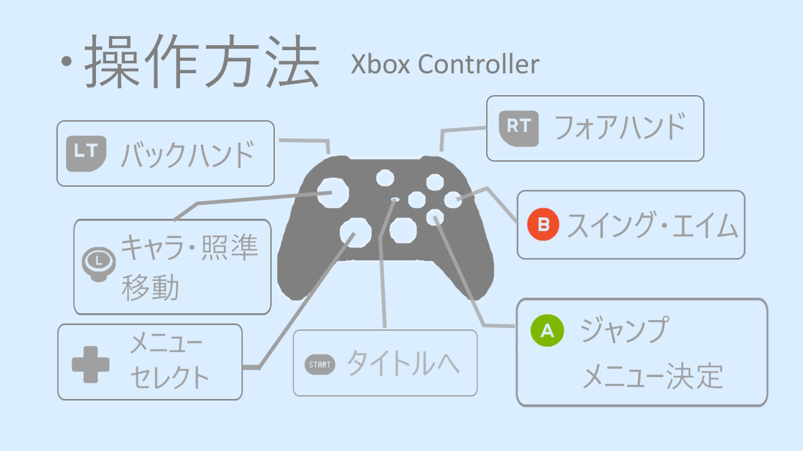

GitHub Pages テスト成功！
自己紹介
日本生まれ日本育ち、好きな食べ物は硬めのお米、嫌いな食べ物は柔らかい米。
スキル
- C言語1年
- C#言語2か月
- C++言語1年10か月
- UnrealEngine1年
- Unity2か月
- DirectX121年
メイン成果物
プレイ動画↓
概要
タイトル： SQUASH_BREAKER
ストラックアウトで狙い通り当てる気持ちよさと、壁を壊していく気持ちよさを体験してもらうために、スカッシュのような操作感で、ブロック崩しを行うゲームを作成しました。
制作目的
グラフィック処理の根本やGPUを用いた描画処理を理解するため、ローレベルAPIであるDirectX 12を採用しました。描画パイプラインを一から作成し、技術構造への理解を深めることを目的に制作しました。
- 制作期間：6か月
- 制作人数：1人
操作方法
コントローラ推奨

詳細は、ビルドデータ同梱のPlayGuidまたは、ゲーム内PlayGuidで確認できます。
動作確認環境
- OS：Windows 10 / 11（64bit）
- CPU：13th Gen Intel Core i7-13700H（2.40 GHz）
- メモリ：32 GB
- GPU：NVIDIA GeForce RTX 4060 Laptop GPU（8 GB）
※上記環境で動作確認を行っています。最低動作環境および推奨スペックは未検証です。
実装内容
DirectX
- リソース、デバイス、パイプラインの作成から描画
- PSOの切り替えが少なくなるように、PSO毎で管理して描画
- インスタンシング描画
- スキニングモデル描画・アニメーション
- ボーンの姿勢計算はCPU、スキニング計算のみGPU
- 蓋絵、背景、文字描画はDirectXTKのスプライトバッチ、スプライトフォンを作成
Game
- コンポーネント指向
- アセット管理
- モデル：Assimpでロード、fbx・obj形式
- 音声：DirectXTK/Audioでロード、Wav形式
- テクスチャ：DirectXTK/DDSTextureLoaderでロード、dds形式
- ロード後はマネージャクラスで管理
- ロード方法は、直接ファイルからとパッケージ化したデータからの二つ実装
- パッケージは単純なファイル結合（暗号化なし、圧縮なし）
- 当たり判定
- AABB
- Sphere
- Ray
- タグありの総当たり（レイヤーはExcelにてチェックボックスで設定）
- 物理
- ボールの挙動
- キャラクターの動き
- 操作
- 入力はDirectXTK
- コントローラ、キーボード
- ステートマシーンで状態管理
参考文献
- DirectX3D 実践ガイド｜著）Pocol
- DirectX12 Programing Vol.2,3,4｜著）山田 英伸
- ゲームプログラマになる前に覚えておきたい技術｜著）平山 尚
- ゲームエンジンアーキテクスチャ｜著）ジェイソン・グレゴリー
工夫したこと
- 可読性や変更しやすさを意識して作成しました。
- Ballクラスでは、衝突応答をストラテジーとして分離しました。通常のボールと敵のボールでは異なるファクトリーを設定し、衝突相手に応じた処理を切り替えています。これにより、Ballクラスを種類ごとに派生させず、ボール本体と衝突時の振る舞いを分離しています。
- 静的なパラメータをParamクラスに分離し、ハードコーディングを減らしてExcelから変更できるようにしました。
GitHubはこちら↓
実行ファイルのダウンロードはこちら↓
※直接ダウンロードできます。
ダウンロード最近のブーム
最近ハマっていることは、睡眠です。
柳沢正志さんの本を、図書館で予約とリクエストしました。
予約した方は、順番待ちが多くて読むのは先になりそうです。
好きな物
自宅では、兎を飼っていいます。
昔飼っていた兎よりも、よく懐いてくれます。

ストレス発散
早寝早起きして、朝の散歩。日の出まえ30分前から、30分ぐらい
遠くを見ながら歩くと眼精疲労も解消できるのでお勧めです。